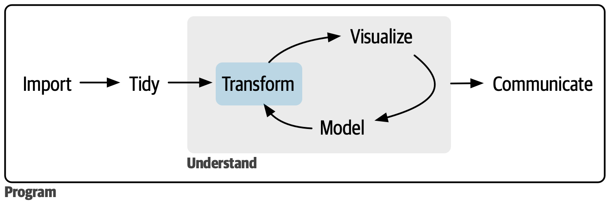

Velkommen til MPS140
Om foreleseren
- Professor i statistikk på Nasjonalt Lesesenter, UiS
- Bruker flipped classroom som undervisningsmetode
- Også interessert i sosiale medier og mental helse Kronikk
Om kurset
MPS 140
Statistikk
Statistikk handler om hvordan vi best samler inn og analyserer data, og hvordan vi trekker riktige konklusjoner fra våre data.

Fra “pensumboka” R for Data Science https://r4ds.hadley.nz/
Vi skal i MPS140 repetere elementære statistikk og så utvide til multippel regresjon og psykometriske modeller. Her er noen nye ting vi skal lære:
- å jobbe med data på en transparent og reproduserbar måte (i R)
- visualisere og sammenfatte data med nøkkeltall (R)
- at vi må ha et kritisk blikk på bruk av statistikk i forskning
- lære om måling av psykologiske begrep som stress, lojalitet, trivsel etc
Koding üôÄ
. . .
I praksis er koding (skrive syntaks i statistikkprogram) en sentral del av statistisk praksis.
. . .
- I klassen har vi stor variasjon i talenter og interesser
- Det blir en del R koding for å illustrere konsepter
- Bruk studiekamerater til å lære
Komponenter
Før samling
- Det er viktig å være forberedt til samling:
- Tekster
- Videoer
- R stoff
Under samling
- Forelesning
- Oppgaver som skal løses i grupper. Basert på forberedelsesstoffet.
- Debriefing
Dagens plan
Forelese cirka 1 time
Jobbe med oppgaver
- Først individuelt 1 time
- Grupper ca 1 time
- Gruppene ligger på canvas
Debriefing
Samlæring i flipped classroom
Ta plass og gi plass
Elsk frustrasjon og forvirring
Å hjelpe noen er å forklare hvordan du tenker, ikke å bare gi svar eller gjøre utregninger for andre
Du har rett til å spørre alle i gruppen om hjelp
Du har plikt til å prøve å hjelpe enhver i gruppen som spør
Du lager på slutten en tilbamelding til hver av gruppemedlemmene !
Team 1 - Team 4 er opprettet ved tilfeldig uttrekk. Se canvas.